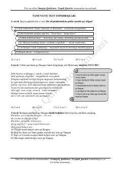

NSOna tili va adabiyot fanidan namunaviy testlar to'plami.
Ushbu qo'llanma ona tili va adabiyot fanidan namunaviy test topshiriqlarini o'z ichiga oladi. Kitobda tinish belgilari va ularning ishlatilish qoidalariga oid murakkab test savollari va ularning tahlillari berilgan. Material Samgin Qurbonov va Yoqub Qurolov tomonidan tayyorlangan.